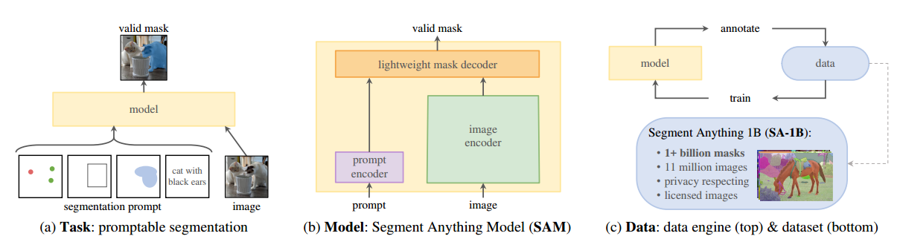
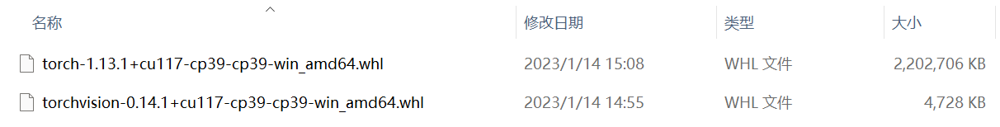
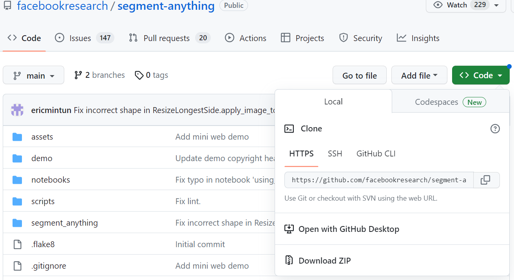
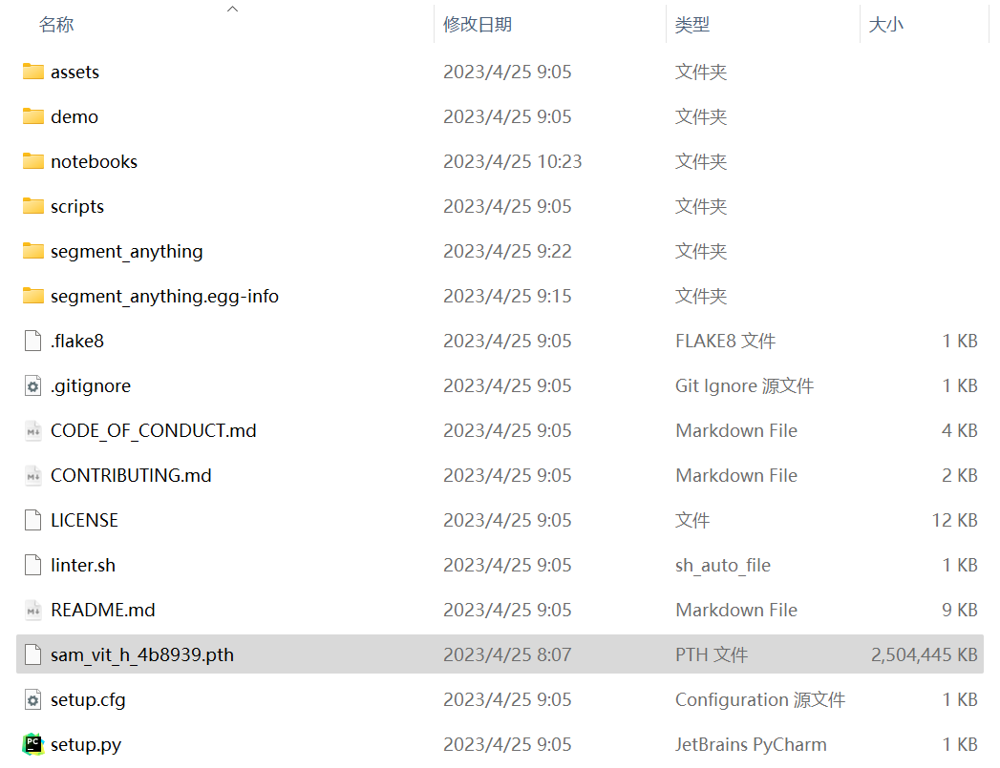
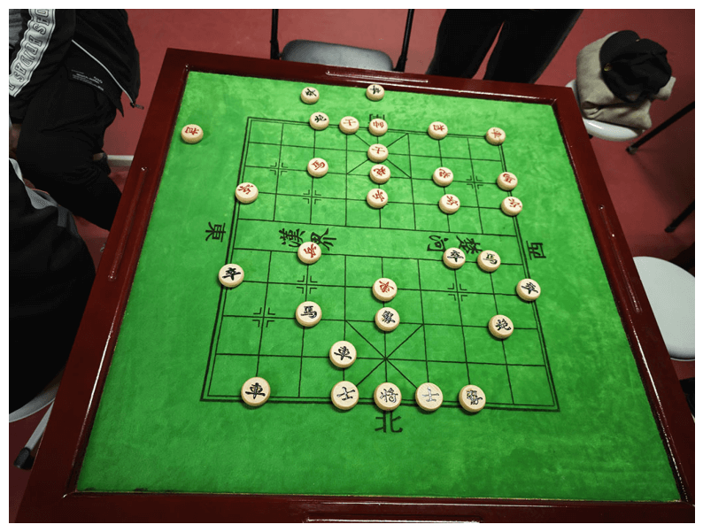
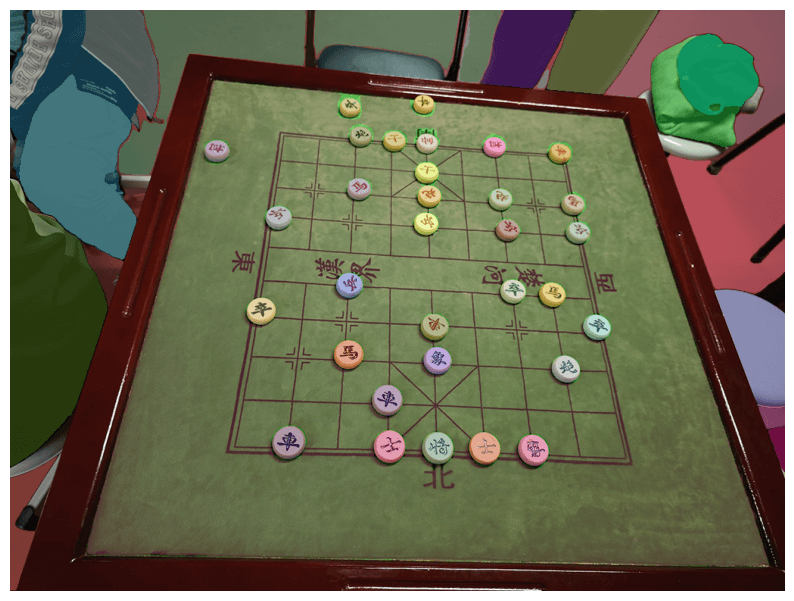

资源
-
PaperWithCode：Segment Anything | Papers With Code
-
python 使用教程：307 - Segment your images in python without training using Segment Anything Model (SAM) - YouTube
笔记
-
介绍了一个 Segment Anything 项目
-
建立了一个迄今为止最大的数据集，1B 个 蒙版 s 和 11M 张图像
建立一个图像分割（image segmentation）的基础模型（foundation model），即，开发一个提示模型（promptable model），并使用一个能够实现强大泛化能力（powerful generalization）的任务在广泛的数据集上进行预训练（pre-train）。

该计划的成功取决于三个组成部分：
- 什么样的**任务（task）**可以实现 zero-shot generalization？
- 使用**提示分割任务（promptable segmentation task）作为预训练目标，通过提示工程（prompt engineering）**解决一般的下游分割任务。
- 提示分割任务提出了一种自然的预训练算法，为每个训练样本模拟一系列提示（点、框、掩码）
- 执行边缘检测
- 分割所有内容，即，生成图像建议
- 分割检测到的对象，即，实例分割
- 作为概念验证，从自由格式文本中分割对象
- 提示分割任务提出了一种自然的预训练算法，为每个训练样本模拟一系列提示（点、框、掩码）
- 使用**提示分割任务（promptable segmentation task）作为预训练目标，通过提示工程（prompt engineering）**解决一般的下游分割任务。
- 相应的模型（model）体系结构是什么？——Segment Anything Model，简称SAM，三个约束（three constraints）
- 一个强大的图像编码器计算图像嵌入（powerful image encoder computes an image embedding）
- MAE pre-trained Vision Transformer（VIT）
- 一个提示编码器嵌入提示（prompt encoder embeds prompts）
- 考虑两组提示：稀疏（点、框、文本）和密集蒙版，通过位置编码来表示点和框，并对每个提示类型和使用 CLIP 的现成文本编码器的自由格式文本进行学习嵌入求和
- 将两个信息源组合在一个轻量级的掩码解码器（lightweight mask decoder）中，预测分段蒙版（segmentation masks）
- 有效地将图像嵌入、提示嵌入和输出令牌映射到蒙版
- 一个强大的图像编码器计算图像嵌入（powerful image encoder computes an image embedding）
- 哪些**数据（data）**可以为这项任务和模型提供支持？
- **数据引擎（data engine）**分为三个阶段：
- 辅助手动（assisted-manual），SAM 帮助注释器注释（annotate）蒙版
- 类似经典的交互式分割（相当于PS？）
- 半自动（semi-automatic），SAM 通过提示可能的对象位置来自动为对象子集生成蒙版
- 向 annotators 展示预先填充了这些蒙版的图像，并要求它们注释任何其他未注释的对象
- 全自动（fully automatic），SAM 用前景点的规则网络提示 SAM，平均每张图像生成约 100 个高质量蒙版
- 辅助手动（assisted-manual），SAM 帮助注释器注释（annotate）蒙版
- 数据集（dataset）：SA-1B
- 比现有最大的数据集 Open Images 多 11 倍的图像和 400 倍的蒙版
- 11M 张图像，平均为 3300 * 4950 像素
- 1B 个 蒙版，99.1% 是自动生成的，经过证实 IoU 很高，质量很好
- 负责任的 AI（responsible AI，简称 RAI），数据集的图像在全球分布均衡
- **数据引擎（data engine）**分为三个阶段：
代码
配环境
新建一个 conda 环境：
1 | |
使用离线安装方式安装 pytorch（被坑了 n 次逐渐熟练了orz，还是离线安装的方式好使），从 download.pytorch.org/whl/torch_stable.html 下载对应版本的 pytorch 和 torchvision：

1 | |
转到下载的目录下：
1 | |
1 | |

在下载下的仓库的根目录上，安装segment-anything：
1 | |
下载预训练好的模型sam_vit_h_4b8939.pth：ViT-H SAM model，也放到仓库根目录下：
当然也可以选择其他模型：

跑！
1. 导入相关库
1 | |
PyTorch version: 1.13.1+cu117
Torchvision version: 0.14.1+cu117
CUDA is available: True
1 | |
2. 读取待分割的图像
1 | |
1 | |

3. 载入待分割的模型
1 | |
4. 设置参数
自动 mask 生成中有几个可调参数，用于控制采样点的密度以及去除低质量或重复 mask 的阈值。
此外，生成可以在图像裁剪上自动运行，以提高较小对象的性能，后处理可以去除杂散像素和孔洞。以下是对更多 masks 进行采样的示例配置：https://github.com/facebookresearch/segment-anything/blob/9e1eb9fdbc4bca4cd0d948b8ae7fe505d9f4ebc7/segment_anything/automatic_mask_generator.py#L35
使用一些设置重新运行以下命令，例如。 iou_thresh 为 0.86 和 0.9，score_thresh 为 0.92 和 0.96
使用 SAM 模型，为整个图像生成蒙版。在图像上生成点提示网络，然后进行过滤低质量和重复的蒙版。默认选择设置具有 ViT-H 主干的 SAM：
SamAutomaticMaskGenerator() 参数：
-
model (Sam)：用于 mask 预测的 SAM 模型。 -
points_per_side（int 或 None）：沿图像一侧采样的点数。 总点数为points_per_side**2。 如果为None，point_grids必须提供明确的点采样。 -
points_per_batch (int)：设置模型同时运行的点数。 更高的数字可能会更快，但会使用更多的显存。 -
pred_iou_thresh (float):[0,1]中的过滤阈值，使用模型的预测 mask 质量。 -
stability_score_thresh (float)：[0,1]中的过滤阈值，使用 mask 在用于二值化模型 mask 预测的截止值变化下的稳定性。 -
stability_score_offset (float)：计算稳定性分数时偏移截止值的量。 -
box_nms_thresh (float)：非最大抑制用来过滤重复 masks 的 box IoU cutoff。 -
crops_n_layers (int): 如果 >0，mask 预测将再次运行图像的 crop。 设置要运行的层数，其中每层有2**i_layer个图像裁剪。 -
crops_nms_thresh (float): 非最大抑制使用的框 IoU 截止值，用于过滤不同 crops 之间的重复 masks。 -
crop_overlap_ratio (float): 设置 crops 重叠的程度。在第一个 crop 层中，crop 将重叠图像长度的这个分数。 具有更多 crops 的后期层缩小了这种重叠。 -
crop_n_points_downscale_factor (int): 在第 n 层中每边采样的点数按crop_n_points_downscale_factor**n缩小。 -
point_grids（list（np.ndarray）或 None）：用于采样的点的显式网格列表，归一化为[0,1]。 列表中的第 n 个网格用于第 n 个裁剪层points_per_side独占。 -
min_mask_region_area (int)：如果 >0，将应用后处理以移除面积小于min_mask_region_area的掩模中的断开区域和孔。 需要opencv。 -
output_mode (str)：返回的形式掩码。可以是binary_mask、uncompressed_rle或coco_rle。coco_rle需要 pycocotools。对于大分辨率，binary_mask可能会消耗大量内存。
1 | |
4. 分割
1 | |
1 | |
55
Mask generation 生成返回一个 list over masks，其中每个 mask 都是一个包含有关 mask 的各种数据的字典。 这些键是：
segmentation：maskarea：mask 的面积（以像素为单位）bbox：XYWH 格式的掩码边界框predicted_iou：模型自己对 mask 质量的预测point_coords：生成此 mask 的采样输入点stability_score：mask 质量的额外衡量标准crop_box：用于生成 XYWH 格式 mask 的图像裁剪
1 | |
1 | |
